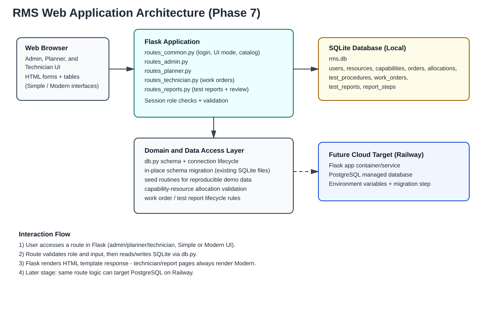

1. Scope
This architecture describes the local RMS runtime — resource/capability management and order allocation (Phase 3-4), the technician work order and test report workflow added in Phase 7, the EUT (Unit Under Test) entity added in Phase 8, the lab/equipment mutual-exclusion constraints added in Phase 9, the standard activity template added in Phase 10, the project/discipline dashboard added in Phase 11, the staff/customer calendar added in Phase 12, the change history/audit trail added in Phase 13, the activity dependencies/planned dates added in Phase 14, the cross-site/planned-overlap warnings and reschedule suggestions added in Phase 15, and the single-page order workspace added in Phase 16 — and defines how it evolves to Railway cloud deployment in later stages.
2. Architecture Diagram

The diagram shows browser interaction with Flask route layers, SQLite persistence for local versions, and the future move to Railway with PostgreSQL.
3. Runtime Components
- Client layer: browser-based HTML pages, in two interfaces (Simple and Modern — see docs/dual-ui.html) for admin, planner, and technician workflows.
- Application layer: Flask blueprints —
routes_common.py(login/logout, UI-mode toggle, resource catalog, help),routes_admin.py(also manages exclusion groups since Phase 9, activity templates since Phase 10, and staff absences since Phase 12),routes_planner.py(also applies templates and reorders test activities since Phase 10, serves the project/discipline dashboard since Phase 11 - now also surfacing cross-site/planned-overlap warnings and reschedule suggestions since Phase 15, manages customer on-site visits and the schedule's absence/visit banner since Phase 12 - the schedule view also flags cross-site equipment use since Phase 15, serves the per-activity history view since Phase 13, manages activity dependencies and planned dates since Phase 14, and serves the single-page order workspace since Phase 16, reusing every action above rather than duplicating them),routes_technician.py(technician dashboard, work orders, blocked on an unmet dependency since Phase 14), androutes_reports.py(test report creation, fill-in, submit, and review/approval). - Domain/data layer: database schema, DB connection lifecycle, schema migration helper (for in-place upgrades of an existing SQLite file), seed routines,
app/scheduling.py(Phase 9: mutual-exclusion conflict checking, shared byroutes_technician.pyandroutes_planner.py's schedule view and, since Phase 11, its dashboard; Phase 14: unmet-dependency and dependency-cycle checks; Phase 15: planned-facility-overlap and reschedule-suggestion checks), andapp/history.py(Phase 13: append-only activity-history recording, called from bothroutes_planner.pyandroutes_technician.pyat every schedule-affecting mutation). - Data layer (local): SQLite file database.
4. Request Flow
- User accesses route from browser.
- Flask route performs role and input validation (
require_rolefor a single role,require_any_rolewhere technicians and planners share access, e.g. the test reports view). - Route executes queries against SQLite and applies business constraints.
- Route returns rendered HTML template with flash feedback. Technician and test-report pages render directly from the Modern templates regardless of the session's Simple/Modern toggle, since that workflow has no Simple-interface equivalent.
5. Security and Access (Basic)
- Role checks enforce admin-only, planner-only, and technician-only actions, plus shared technician-or-planner access to the test reports view. The resource catalog requires any signed-in role, but is currently unlinked from navigation in both interfaces (route still functions, just hidden pending confirmed need). An anonymous visitor hitting
/is served a public landing page; a signed-in user hitting/, or completing login, is routed straight to their own role's workspace (Admin, Planner, or Technician dashboard) viaroutes_common.py:role_home_url(). - Session holds authenticated username and role; a technician's session is switched to the Modern UI automatically on login.
- Input validation prevents empty required fields and invalid allocation combinations.
- Test report edit/submit is restricted to the report's own technician; review (approve/reject) is restricted to a different technician or a planner — both enforced in
routes_reports.py, not by a database constraint.
6. Environment Separation
- Local: Flask + SQLite for fast iteration and demonstrator usage.
- Cloud target: Railway deployment with environment variables and PostgreSQL.
- Migration path: keep route/domain design stable; swap DB backend and add migration scripts in a later phase.